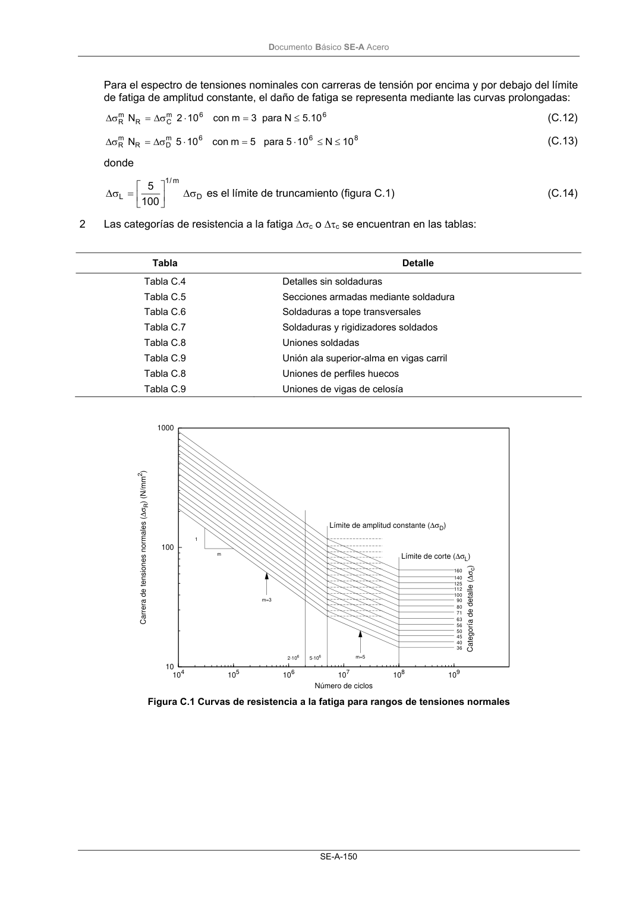

DB-SE-A Acero · edición 2007-10-23 · capa oficial
Documento DB-SE-A-oficial · SHA-256 del PDF 9ed9ea694aabfbda3bfbbef40dfe9223fde05d13c35bc2ba9751e5a96a22a64f
Página física 152 de 168.
Copia fiel del PDF fuente · Fuente oficial
Ficha de la disposición en la fuente oficial
Formato: Texto de la página (Markdown)
Documento Básico SE-A Acero SE-A-150 Para el espectro de tensiones nominales con carreras de tensión por encima y por debajo del límite de fatiga de amplitud constante, el daño de fatiga se representa mediante las curvas prolongadas: 6 6 m C R m R 10 . 5 N para 3 m con 10 2 N ≤ = ⋅ σ ∆ = σ ∆ (C.12) 8 6 6 m D R m R 10 N 10 5 para 5 m con 10 5 N ≤ ≤ ⋅ = ⋅ σ ∆ = σ ∆ (C.13) donde D m / 1 L 100 5 σ ∆ = σ ∆ es el límite de truncamiento (figura C.1) (C.14) 2 Las categorías de resistencia a la fatiga ∆σc o ∆τc se encuentran en las tablas: Tabla Detalle Tabla C.4 Tabla C.5 Tabla C.6 Tabla C.7 Tabla C.8 Tabla C.9 Tabla C.8 Tabla C.9 Detalles sin soldaduras Secciones armadas mediante soldadura Soldaduras a tope transversales Soldaduras y rigidizadores soldados Uniones soldadas Unión ala superior-alma en vigas carril Uniones de perfiles huecos Uniones de vigas de celosía 10 100 1000 104 105 106 107 108 109 Carrera de tensiones normales (∆σR) (N/mm2) Número de ciclos Límite de corte (∆σL) Límite de amplitud constante (∆σD) Categoría de detalle (∆σc) 1 m m=3 m=5 2·106 5·106 160 140 125 112 100 90 80 71 63 56 50 45 40 36 Figura C.1 Curvas de resistencia a la fatiga para rangos de tensiones normales
